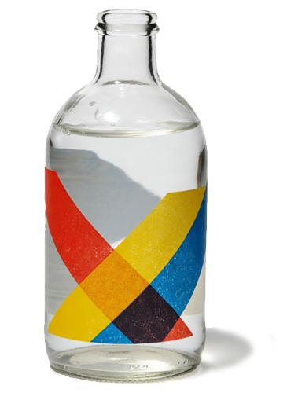
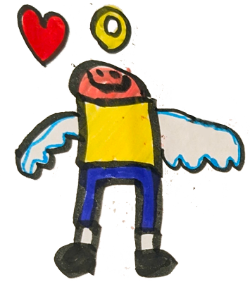

Tonic for the Bones
The Art & Soul of Adversity
TONIC
A liquid medicine that has the general effect of making you feel better rather than treating a particular health problem that you might have.
"Something that makes you feel stronger or happier."
Tonic for the Bones (David Enker, 1970) is a meditation on adversity, with reflections on identity, adoption, and intergenerational trauma. Resilience is found in fatherhood and creative expression. Accompanied by illustrations from his young son, the work functions as a graphic memoir that finds beauty in life. Ultimately, the narrative shifts from a focus on personal loss toward a broader philosophical embrace of the present moment. It suggests that while illness imposes limitations, it can also reveal what truly matters.

"Take a leap of faith and let go.
It will be a balm for the soul,
a tonic for your bones."